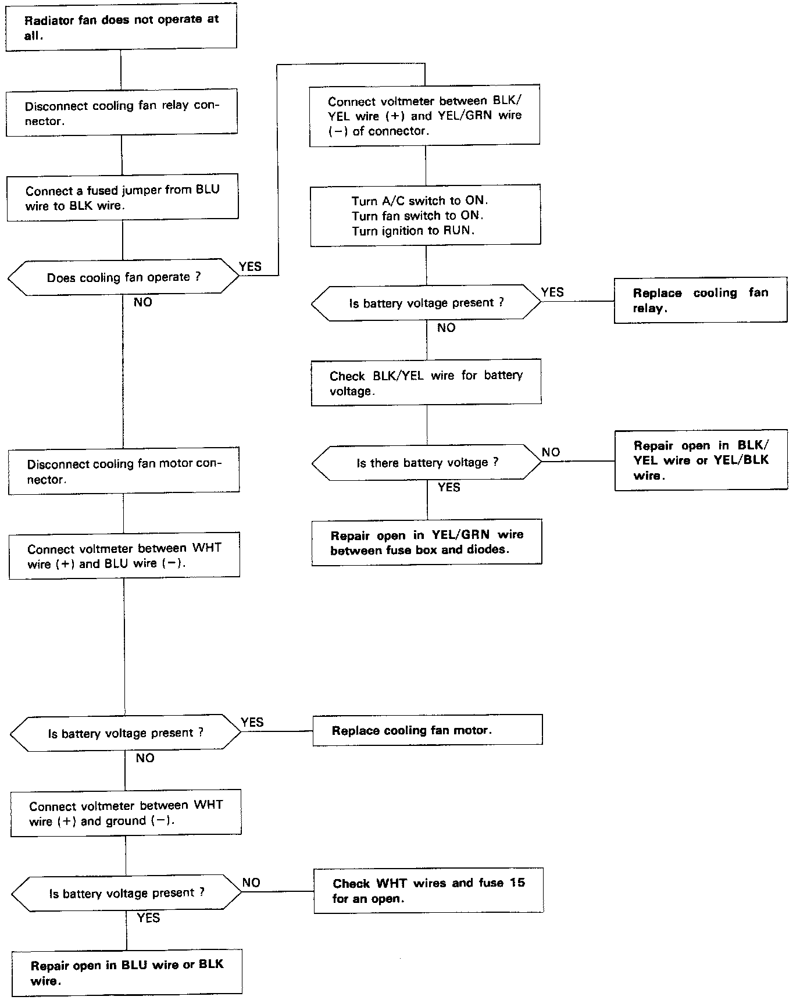

Operation CHARM
: Car repair manuals for everyone.
Home
>>
Acura
>>
1992
>>
Integra L4-1678cc 1.7L DOHC (VTEC) FI
>>
Repair and Diagnosis
>>
Heating and Air Conditioning
>>
Testing and Inspection
>>
Component Tests and General Diagnostics
>>
Non-Trouble Code Procedures
>>
A/C System Troubleshooting Flowcharts
>>
Cooling Fan
Cooling Fan
Cooling Fan
